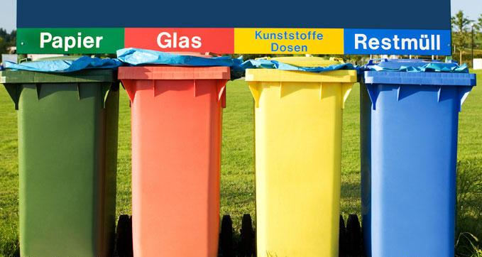

As early as 1996, the concept of "garbage classification" has been introduced into China, and relevant waste management regulations have been formulated and implemented in various parts of the country, but no significant results have been achieved. In early 2019, “Garbage Management Ordinance in Shanghai” was adopted at the second session of the 15th people's congress of Shanghai. This Ordinance will be officially implemented in July 2019, residents and businesses in Shanghai have to strictly follow the regulations to sort their rubbish, otherwise, they will face huge fines. In addition, Big cities like Beijing, Guangzhou, Shenzhen have also enacted laws to manage waste classification, this marks the official entry of a mandatory era of garbage classification in China.
Germany was one of the first countries in the world to separate waste. According to a report by the German Federal Ministry for the Environment, Nature Conservation and Nuclear Energy of 2018, Germany produced about 6.5 million tons of household waste in 2015, but its recycling rate reached 79 percent. Meanwhile, Germany tried to take different measures to reduce the generation of waste from the source and achieved remarkable results, such as improving the public's environmental awareness and reducing the production of plastic products. Germany has a perfect legal system of environmental protection, a sound waste disposal system, advanced science and technology, and the environmental protection awareness of people as the basis of all. Its rich experience can be used as a reference for the future development of China's waste classification.
In 1972, the German government promulgated the waste disposal law. This is Germany's first law on waste disposal, focusing on the end of waste disposal. After four revisions, it was renamed the waste avoidance and treatment act, which introduced the concepts of waste classification, reduction, and recycling. After that, the concept of German legal governance of garbage classification has changed from end to front.
In Germany, waste is divided into the following nine categories: organic waste (or biological waste), packaging waste, waste paper waste, glass waste, special toxic waste (batteries, etc.), bulky waste, clothing waste, construction waste, and residual waste (dust, dirt, cigarette butts, etc.). In daily life, different color bins are used to distinguish different wastes. For example, brown or green bins are used for biological waste, blue bins for waste paper, yellow bins for packaging waste, and black bins for residual waste. Different colors of bins are used in different federal states in Germany and different types of residence have also different standards of household trash cans or plastic bags. In order to save the cost of garbage collection and transportation, all kinds of garbage have time for unified collection and transportation. At the beginning of each year, the waste disposal company will issue the residents with the collection and transportation schedule of the year.
Germany's advanced science and technology also provides guarantees to highly effective garbage classification. Germany's principle of waste management is moderate sorting at the source and fine sorting at the end. After recycling of different kinds of garbage, then through the sorting of garbage terminal processing links, namely, compost, incineration, sanitary landfill, etc. This process is supported by different process technologies. For example, RFID (Radio Frequency Identification) technology can understand the location and status information of garbage trucks through remote monitoring, and conduct remote monitoring of the collected garbage. The garbage classification robot based on recognition technology can grab different kinds of garbage for classification according to different classification instructions, which greatly improves the efficiency of garbage sorting.
In 2016, China-Germany Institut for Economic Advance brought Chinese and German experts together and organized the launch of the Chinese-German Forum "Waste Reduction and Recycling: Challenges and Solutions of Source Classification", focusing on the hot topics of China's waste classification reduction, recycling of different wastes and recycling of wastes. In the future, China will learn from Germany's experience in garbage classification management from the aspects of cultivating civic awareness, complete technology, policy support and improvement of laws and regulations, and the exchanges between China and Germany on garbage classification will also be deepened. Deutsches Lächeln GmbH facilitates Sino-German exchanges and works with Chinese and German enterprises to build a platform for mutual discussion, so as to provide beneficial solutions to many problems caused by garbage classification and achieve win-win cooperation.
For more updated business and industry information, please stay tuned to Deutsches Laecheln GmbH.
Resources: Spiegel Online; German Federal Ministry for the Environment, Nature Conservation and Nuclear Energy; China-Germany Institut for Economic Advance